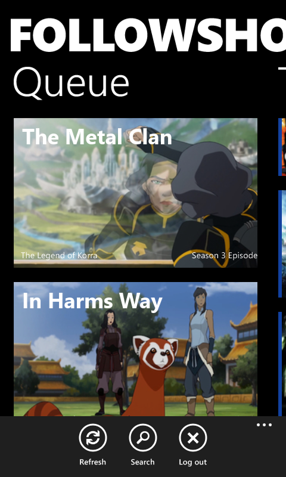
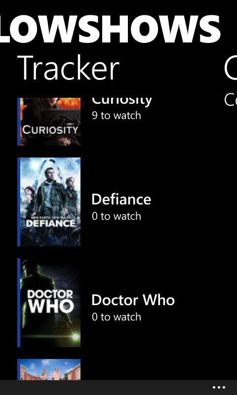
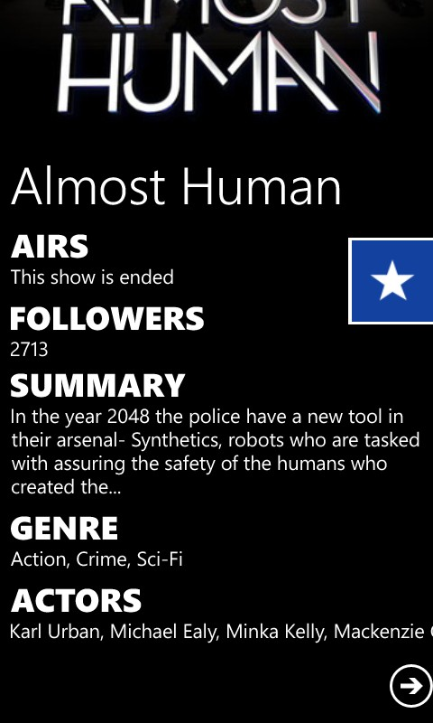
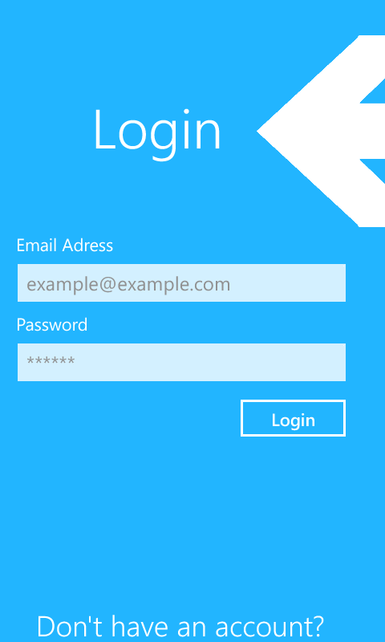
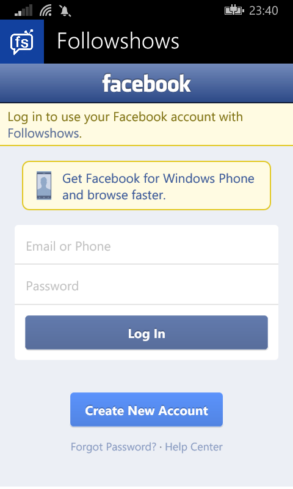

Download
Made for the Windows Phone platform
FollowShows is the easiest way to keep track of when all your favorite shows are airing. Easily track what shows you have watched and which episodes are on next. You can configure notifications so you never miss another episode again. Want to know when game of thrones comes back? We got you covered.
Screenshots
- 
- 
- 
- 
- 
Features
- No ads, no premium version, no paywall
- Login with facebook/email
- Offline queue and tracker
- Login with facebook/email
- Offline queue and tracker
Email
View code
Report bugs
Vote for new features
Made by newnottakenname